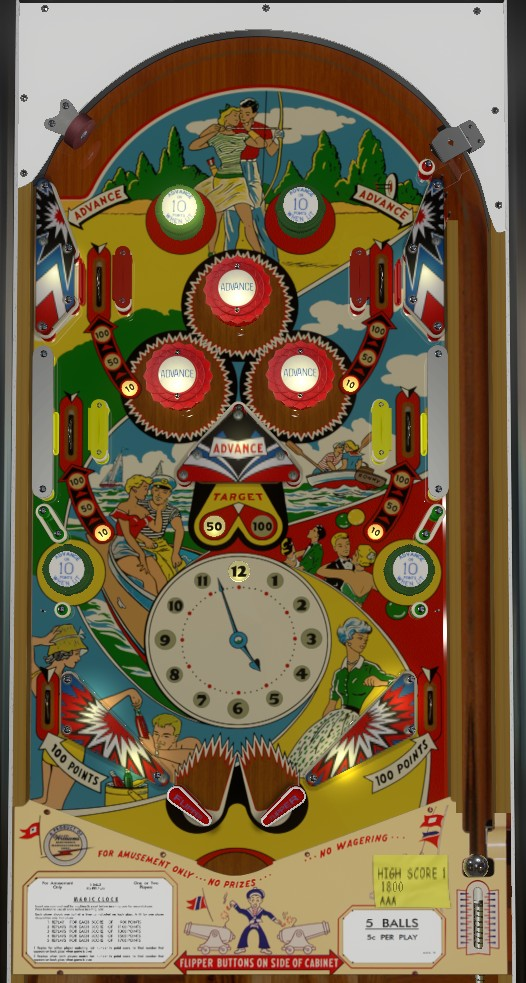

Unlit green passive bumpers, any red pop bumper, a missed shot to the center swinging target, and the top left and top right wall switches score 1 Advance on the clock. At the start of each ball, the top and middle rollover lanes score 10 points, and the center swinging target scores 50 points. Making 12 advances on a ball increases the value of the top and middle rollover lanes to 50 points. Making 24 advances on a ball increases the value of all rollover lanes and the center swinging target to 100 points.
Green passive bumpers score 1 point, or 10 points when lit. From the start of each ball, the top left green bumper is lit if the clock is on 12, 1, or 2; the top right green bumper is lit at 3, 4, or 5; the lower left green bumper is lit at 6, 7, or 8; and the lower right green bumper is lit at 9, 10, or 11. Making 36 total advances on a ball lights all 4 green bumpers for 10 points for the rest of the ball.
Out lanes always score 100 points. This is frequently more than an entire ball's worth of score.
Where possible, use the plunge to get the ball to rattle around within the red pop bumpers for easy advances. The swinging target is a very dangerous shot; the only safe way to take advantage of Advances is to shoot to either side of the swinging target structure to get out of the bottom half of the table and hopefully roll through an upper or middle side lane for increased value.
There is no end of ball bonus, extra ball feature, or playfield Special. Tilt ends game, but only for the player who tilted.
The below picture of Magic Clock's playfield was taken from the VPX recreation by Loserman76.
